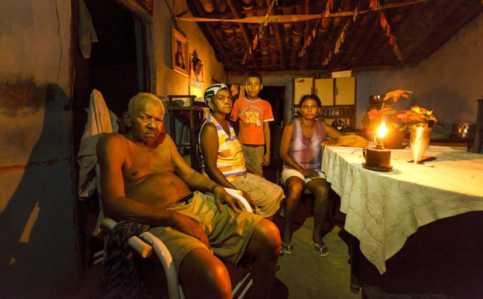
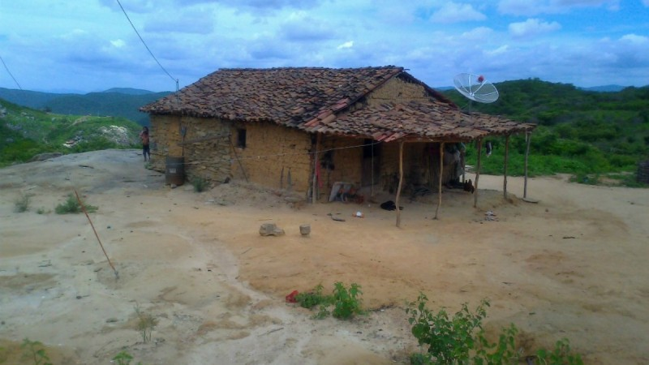
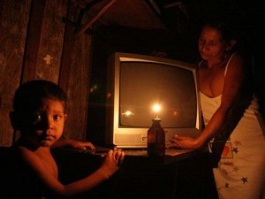
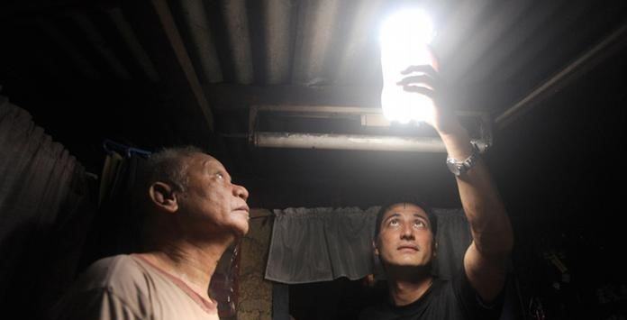
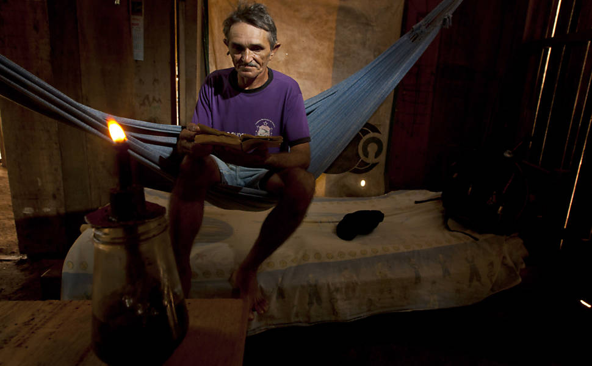
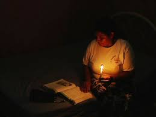

Objetivos
Ajudar territórios que não tem energia
Amazonias, Pará, Amapá são territórios que precisam de um forncecimento de energia com mais qualidade. São territórios onde o forncecimento de energia não tem uma qualidade boa, além de prejudicar o meio ambiente e ter um custo elevado para pessoas que não tem uma fonte de renda muito boa. Nossa idéia é ajudar esses territórios ao longo do tempo levando energia de qualidade e acessível para essas pessoas.
Incentivar o uso de energia fotovoltaica
Mostrar para as pessoas que a energia fotovoltaica pode ser uma nova opção para todos nós brasileiros, economizando energia, ajudando o meio ambiente, pagando mais barato e mostrando que todos podem ter acesso a uma energia de qualidade sem desigualdades. Aproveitando o clima tropical de nosso país, sol e calor, e beneficiando ainda mais pessoas que moram nas regiões do Norte e Nordeste.
Ajudar o meio ambiente com energias renováveis
Diminuindo poluições que fontes de energias não renováveis gastam, a energia solar junto com outras fontes de energias renováveis trás um céu mais limpo, não causa prejuízos para o meio ambiente e, assim com o tempo o planeta passa a ser mais limpo e preservado.
Criar um grande time de pessoas para salvar o planeta
Somos uma Organização Sem Fins Lucrativos, pessoas em conjunto fazem a diferença, ajudam e contribuem com essa ação de melhorar vidass e o meio ambiente. Para isso procuramos criar um grande time de pessoas, parcerias com outros projetos, coleta de ideias de soluções, pessoas para apoiar nosso projeto e, assim, poder cuidar do nosso planeta e ajudar pessoas.
Veja como é a realidade de regiões do Brasil que a mídia não mostram com muita frequência
     Contato
Entre em contato com a gente para ideias de soluções, para ser nosso voluntário e apoiar o nosso projeto!